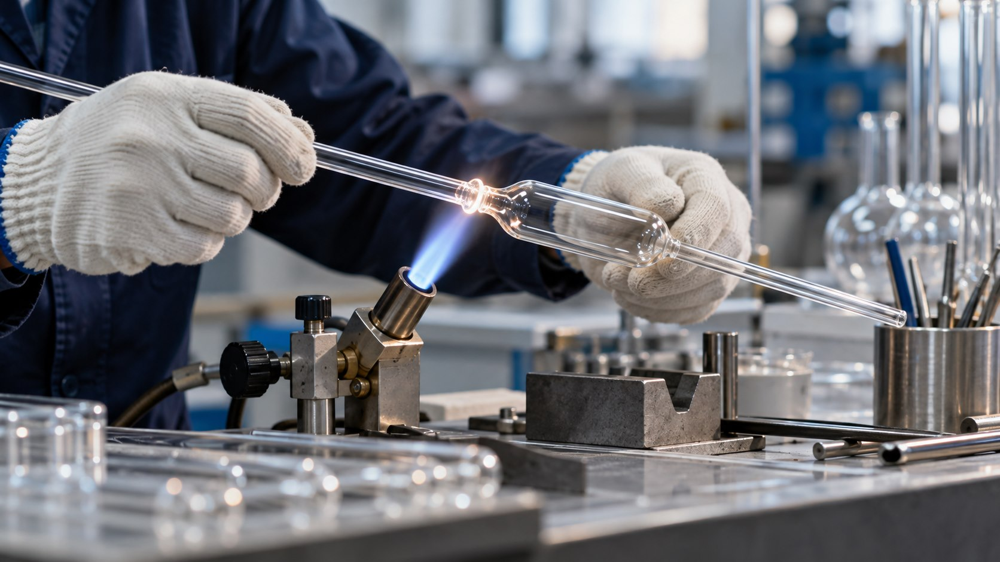

Capacidade nominal indicada no próprio produto.
Vidrarias e soluções laboratoriais
Precisão que acompanha a ciência.
Soluções para laboratórios que exigem confiança em cada preparo, análise e descoberta.
Atendimento especializadoFabricação especialCompra online
Portfólio
Encontre pelo que o laboratório precisa fazer.
Uma organização direta por famílias de produtos, com consulta rápida e acesso à loja.

Em destaque
O essencial, visto de perto.
Role para explorar os pontos que orientam a escolha de uma vidraria.
Marcações visuais de 50 a 250 mL.
Identificação presente na vidraria fotografada.
Marca preservada no próprio béquer.
Conteúdo demonstrativo — especificações finais dependem do modelo e do catálogo oficial.

Fabricação especial
Quando o padrão não atende, começa o trabalho sob medida.
Peças especiais podem partir de uma amostra, desenho técnico ou especificação. A equipe orienta o caminho de acordo com a necessidade do laboratório.
Conversar sobre uma peça- 01
- Por amostra
- 02
- Por desenho
- 03
- Por especificação
Por que Plena-Lab
Conhecimento técnico que encurta o caminho.
Atendimento que entende a aplicação.
Um contato próximo para ajudar a direcionar a escolha de produtos e soluções.
Do item de rotina à peça especial.
Portfólio para demandas recorrentes e desenvolvimento sob consulta.
Informação e compra em canais claros.
Site institucional, catálogo e loja virtual conectados ao próximo passo.

Calibração
Rastreabilidade para decisões mais seguras.
Serviços de calibração com acreditação Cgcre/Inmetro, respeitando sempre o escopo vigente.
Consultar escopo e atendimentoCatálogo institucional
Informação técnica organizada para consulta.
A estrutura está pronta para receber a próxima versão oficial do catálogo.
Consultar área do catálogoPara revendedores
Uma relação comercial mais próxima.
Conheça a proposta do programa e a futura área reservada para clientes autorizados.
Conhecer área de revendaFale com a Plena-Lab